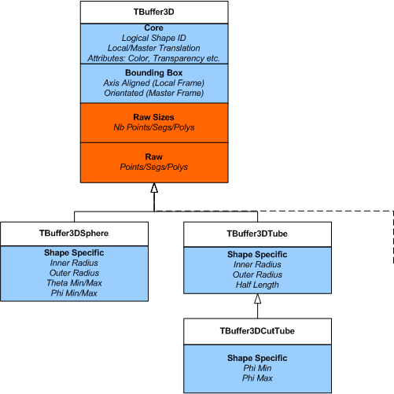

class TVirtualViewer3D: public TObject
TVirtualViewer3D Abstract 3D shapes viewer. The concrete implementations are: TViewerX3D : X3d viewer TGLViewer : OpenGL viewer
3D Viewer Infrastructure Overview
The 3D Viewer infrastructure consists of:
- TVirtualViewer3D interface: An abstract handle to the viewer, allowing client to test preferences, add objects, control the viewer via scripting (to be added) etc.
- TBuffer3D class hierarchy: Used to describe 3D objects ("shapes") - filled /added by negotiation with viewer via TVirtualViewer3D.
Together these allow clients to publish objects to any one of the 3D viewers (currently OpenGL/x3d,TPad), free of viewer specific drawing code. They allow our simple x3d viewer, and considerably more sophisticated OpenGL one to both work with both geometry libraries (g3d and geom) efficiently.
Publishing to a viewer consists of the following steps:
- Create / obtain viewer handle
- Begin scene on viewer
- Fill mandatory parts of TBuffer3D describing object
- Add to viewer
- Fill optional parts of TBuffer3D if requested by viewer, and add again
... repeat 3/4/5 as required - End scene on viewer
Creating / Obtaining Viewer
Create/obtain the viewer handle via local/global pad - the viewer is always bound to a TPad object at present [This may be removed as a restriction in the future] . You should perform the publishing to the viewer described below in the Paint() method of the object you attach to the pad (via Draw())
TVirtualViewer3D * v = gPad->GetViewer3D("xxxx");
" xxxx" is viewer type: OpenGL "ogl", X3D "x3d" or Pad "pad" (default). The viewer is created via the plugin manager, attached to pad, and the interface returned.
Begin / End Scene
Objects must be added to viewer between BeginScene/EndScene calls e.g.
v->BeginScene(); ..... v->AddObject(....); v->AddObject(....); ..... v->EndScene();>The BeginScene call will cause the viewer to suspend redraws etc, and after the EndScene the viewer will reset the camera to frame the new scene and redraw.
[x3d viewer does not support changing of scenes - objects added after the first Open/CloseScene pair will be ignored.]
Filling TBuffer3D and Adding to Viewer
The viewers behind the TVirtualViewer3D interface differ greatly in their capabilities e.g.
- Some know how to draw certain shapes natively (e.g. spheres/tubes in OpenGL) - others always require a raw tessellation description of points/lines/segments.
- Some need the 3D object positions in the global frame, others can cope with local frames + a translation matrix - which can give considerable performance benefits.
To cope with these situations the object buffer is filled out in negotiation with the viewer. TBuffer3D classes are conceptually divided into enumerated sections Core, BoundingBox, Raw etc (see TBuffer3D.h for more details).

The SectionsValid() / SetSectionsValid / ClearSectionsValid() methods of TBuffer3D are used to test/set/clear these section valid flags.
The sections found in TBuffer3D (Core/BoundingBox/Raw Sizes/Raw) are sufficient to describe any tessellated shape in a generic fashion. An additional ShapeSpecific section in derived shape specific classes allows a more abstract shape description ("a sphere of inner radius x, outer radius y"). This enables a viewer which knows how to draw (tessellate) the shape itself to do so, which can bring considerable performance and quality benefits, while providing a generic fallback suitable for all viewers.
The rules for client negotiation with the viewer are:
- If suitable specialized TBuffer3D class exists, use it, otherwise use TBuffer3D.
- Complete the mandatory Core section.
- Complete the ShapeSpecific section if applicable.
- Complete the BoundingBox if you can.
- Pass this buffer to the viewer using one of the AddObject() methods - see below.
If the viewer requires more sections to be completed (Raw/RawSizes) AddObject() will return flags indicating which ones, otherwise it returns kNone. You must fill the buffer and mark these sections valid, and pass the buffer again. A typical code snippet would be:
TBuffer3DSphere sphereBuffer;
Fill out kCore...
Fill out kBoundingBox...
Fill out kShapeSpecific for TBuffer3DSphere
Try first add to viewer
Int_t reqSections = viewer->AddObject(buffer);
if (reqSections != TBuffer3D::kNone) {
if (reqSections & TBuffer3D::kRawSizes) {
Fill out kRawSizes...
}
if (reqSections & TBuffer3D::kRaw) {
Fill out kRaw...
}
Add second time to viewer - ignore return cannot do more
viewer->AddObject(buffer);
}
}>
ShapeSpecific: If the viewer can directly display the buffer without
filling of the kRaw/kRawSizes section it will not need to request client side
tessellation.
Currently we provide the following various shape specific classes, which the
OpenGL viewer can take advantage of (see TBuffer3D.h and TBuffer3DTypes.h)
- TBuffer3DSphere - solid, hollow and cut spheres*
- TBuffer3DTubeSeg - angle tube segment
- TBuffer3DCutTube - angle tube segment with plane cut ends.
*OpenGL only supports solid spheres at present - cut/hollow ones will be requested tessellated.
Anyone is free to add new TBuffer3D classes, but it should be clear that the viewers require updating to be able to take advantage of them. The number of native shapes in OpenGL will be expanded over time.
BoundingBox: You are not obliged to complete this, as any viewer requiring one internally (OpenGL) will build one for you if you do not provide. However to do this the viewer will force you to provide the raw tessellation, and the resulting box will be axis aligned with the overall scene, which is non-ideal for rotated shapes.
As we need to support orientated (rotated) bounding boxes, TBuffer3D requires the 6 vertices of the box. We also provide a convenience function, SetAABoundingBox(), for simpler case of setting an axis aligned bounding box.
Master/Local Reference Frames
The Core section of TBuffer3D contains two members relating to reference frames: fLocalFrame & fLocalMaster. fLocalFrame indicates if any positions in the buffer (bounding box and tessellation vertexes) are in local or master (world frame). fLocalMaster is a standard 4x4 translation matrix (OpenGL colum major ordering) for placing the object into the 3D master frame.If fLocalFrame is kFALSE, fLocalMaster should contain an
identity matrix. This is set by default, and can be reset using SetLocalMasterIdentity() function.
Logical & Physical Objects
There are two cases of object addition:
- Add this object as a single independent entity in the world reference frame.
- Add a physical placement (copy) of this logical object (described in local reference frame).
The second case is very typical in geometry packages, GEANT4, where we have very large number repeated placements of relatively few logical (unique) shapes. Some viewers (OpenGL only at present) are able to take advantage of this by identifying unique logical shapes from the fID logical ID member of TBuffer3D. If repeated addition of the same fID is found, the shape is cached already - and the costly tessellation does not need to be sent again. The viewer can also perform internal GL specific caching with considerable performance gains in these cases.
For this to work correctly the logical object in must be described in TBuffer3D in the local reference frame, complete with the local/master translation. The viewer indicates this through the interface method
PreferLocalFrame()
If this returns kTRUE you can make repeated calls to AddObject(), with TBuffer3D containing the same fID, and different fLocalMaster placements.
For viewers supporting logical/physical objects, the TBuffer3D content refers to the properties of logical object, with the fLocalMaster transform and the fColor and fTransparency attributes, which can be varied for each physical object.
As a minimum requirement all clients must be capable of filling the raw tessellation of the object buffer, in the master reference frame. Conversely viewers must always be capable of displaying the object described by this buffer.
Scene Rebuilds
It should be understood that AddObject is not an explicit command to the viewer - it may for various reasons decide to ignore it:
- It already has the object internally cached .
- The object falls outside some 'interest' limits of the viewer camera.
- The object is too small to be worth drawing.
In all these cases AddObject() returns kNone, as it does for successful addition, simply indicating it does not require you to provide further information about this object. You should not try to make any assumptions about what the viewer did with it.
This enables the viewer to be connected to a client which sends potentially millions of objects, and only accept those that are of interest at a certain time, caching the relatively small number of CPU/memory costly logical shapes, and retaining/discarding the physical placements as required. The viewer may decide to force the client to rebuild (republish) the scene (via a TPad repaint at present), and thus collect these objects if the internal viewer state changes. It does this presently by forcing a repaint on the attached TPad object - hence the reason for putting all publishing to the viewer in the attached pad objects Paint() method. We will likely remove this requirement in the future, indicating the rebuild request via a normal ROOT signal, which the client can detect.
Physical IDs
TVirtualViewer3D provides for two methods of object addition:virtual Int_t AddObject(const TBuffer3D & buffer, Bool_t * addChildren = 0)virtual Int_t AddObject(UInt_t physicalID, const TBuffer3D & buffer, Bool_t * addChildren = 0)
If you use the first (simple) case a viewer using logical/physical pairs will generate IDs for each physical object internally. In the second you can specify a unique identifier from the client, which allows the viewer to be more efficient. It can now cache both logical and physical objects, and only discard physical objects no longer of interest as part of scene rebuilds.
Child Objects
In many geometries there is a rigid containment hierarchy, and so if the viewer is not interested in a certain object due to limits/size then it will also not be interest in any of the contained branch of descendents. Both AddObject() methods have an addChildren parameter. The viewer will complete this (if passed) indicating if children (contained within the one just sent) are worth adding.
Recyling TBuffer3D
Once add AddObject() has been called, the contents are copied to the viewer internally. You are free to destroy this object, or recycle it for the next object if suitable.
Function Members (Methods)
This is an abstract class, constructors will not be documented.
Look at the header to check for available constructors.
| virtual | ~TVirtualViewer3D() |
| void | TObject::AbstractMethod(const char* method) const |
| virtual void | AddCompositeOp(UInt_t operation) |
| virtual Int_t | AddObject(const TBuffer3D& buffer, Bool_t* addChildren = 0) |
| virtual Int_t | AddObject(UInt_t physicalID, const TBuffer3D& buffer, Bool_t* addChildren = 0) |
| virtual void | TObject::AppendPad(Option_t* option = "") |
| virtual void | BeginScene() |
| virtual void | TObject::Browse(TBrowser* b) |
| virtual Bool_t | BuildingScene() const |
| virtual Bool_t | CanLoopOnPrimitives() const |
| static TClass* | Class() |
| virtual const char* | TObject::ClassName() const |
| virtual void | TObject::Clear(Option_t* = "") |
| virtual TObject* | TObject::Clone(const char* newname = "") const |
| virtual void | CloseComposite() |
| virtual Int_t | TObject::Compare(const TObject* obj) const |
| virtual void | TObject::Copy(TObject& object) const |
| virtual void | TObject::Delete(Option_t* option = "")MENU |
| virtual Int_t | TObject::DistancetoPrimitive(Int_t px, Int_t py) |
| virtual void | TObject::Draw(Option_t* option = "") |
| virtual void | TObject::DrawClass() constMENU |
| virtual TObject* | TObject::DrawClone(Option_t* option = "") constMENU |
| virtual void | DrawViewer() |
| virtual void | TObject::Dump() constMENU |
| virtual void | EndScene() |
| virtual void | TObject::Error(const char* method, const char* msgfmt) const |
| virtual void | TObject::Execute(const char* method, const char* params, Int_t* error = 0) |
| virtual void | TObject::Execute(TMethod* method, TObjArray* params, Int_t* error = 0) |
| virtual void | TObject::ExecuteEvent(Int_t event, Int_t px, Int_t py) |
| virtual void | TObject::Fatal(const char* method, const char* msgfmt) const |
| virtual TObject* | TObject::FindObject(const char* name) const |
| virtual TObject* | TObject::FindObject(const TObject* obj) const |
| virtual Option_t* | TObject::GetDrawOption() const |
| static Long_t | TObject::GetDtorOnly() |
| virtual const char* | TObject::GetIconName() const |
| virtual const char* | TObject::GetName() const |
| virtual char* | TObject::GetObjectInfo(Int_t px, Int_t py) const |
| static Bool_t | TObject::GetObjectStat() |
| virtual Option_t* | TObject::GetOption() const |
| virtual const char* | TObject::GetTitle() const |
| virtual UInt_t | TObject::GetUniqueID() const |
| virtual Bool_t | TObject::HandleTimer(TTimer* timer) |
| virtual ULong_t | TObject::Hash() const |
| virtual void | TObject::Info(const char* method, const char* msgfmt) const |
| virtual Bool_t | TObject::InheritsFrom(const char* classname) const |
| virtual Bool_t | TObject::InheritsFrom(const TClass* cl) const |
| virtual void | TObject::Inspect() constMENU |
| void | TObject::InvertBit(UInt_t f) |
| virtual TClass* | IsA() const |
| virtual Bool_t | TObject::IsEqual(const TObject* obj) const |
| virtual Bool_t | TObject::IsFolder() const |
| Bool_t | TObject::IsOnHeap() const |
| virtual Bool_t | TObject::IsSortable() const |
| Bool_t | TObject::IsZombie() const |
| virtual void | TObject::ls(Option_t* option = "") const |
| void | TObject::MayNotUse(const char* method) const |
| virtual Bool_t | TObject::Notify() |
| virtual void | ObjectPaint(TObject*, Option_t* = "") |
| void | TObject::Obsolete(const char* method, const char* asOfVers, const char* removedFromVers) const |
| virtual Bool_t | OpenComposite(const TBuffer3D& buffer, Bool_t* addChildren = 0) |
| static void | TObject::operator delete(void* ptr) |
| static void | TObject::operator delete(void* ptr, void* vp) |
| static void | TObject::operator delete[](void* ptr) |
| static void | TObject::operator delete[](void* ptr, void* vp) |
| void* | TObject::operator new(size_t sz) |
| void* | TObject::operator new(size_t sz, void* vp) |
| void* | TObject::operator new[](size_t sz) |
| void* | TObject::operator new[](size_t sz, void* vp) |
| TVirtualViewer3D& | operator=(const TVirtualViewer3D&) |
| virtual void | PadPaint(TVirtualPad*) |
| virtual void | TObject::Paint(Option_t* option = "") |
| virtual void | TObject::Pop() |
| virtual Bool_t | PreferLocalFrame() const |
| virtual void | TObject::Print(Option_t* option = "") const |
| virtual void | PrintObjects() |
| virtual Int_t | TObject::Read(const char* name) |
| virtual void | TObject::RecursiveRemove(TObject* obj) |
| void | TObject::ResetBit(UInt_t f) |
| virtual void | ResetCameras() |
| virtual void | ResetCamerasAfterNextUpdate() |
| virtual void | TObject::SaveAs(const char* filename = "", Option_t* option = "") constMENU |
| virtual void | TObject::SavePrimitive(ostream& out, Option_t* option = "") |
| virtual TObject* | SelectObject(Int_t, Int_t) |
| void | TObject::SetBit(UInt_t f) |
| void | TObject::SetBit(UInt_t f, Bool_t set) |
| virtual void | TObject::SetDrawOption(Option_t* option = "")MENU |
| static void | TObject::SetDtorOnly(void* obj) |
| static void | TObject::SetObjectStat(Bool_t stat) |
| virtual void | TObject::SetUniqueID(UInt_t uid) |
| virtual void | ShowMembers(TMemberInspector& insp) |
| virtual void | Streamer(TBuffer& b) |
| void | StreamerNVirtual(TBuffer& b) |
| virtual void | TObject::SysError(const char* method, const char* msgfmt) const |
| Bool_t | TObject::TestBit(UInt_t f) const |
| Int_t | TObject::TestBits(UInt_t f) const |
| virtual void | TObject::UseCurrentStyle() |
| static TVirtualViewer3D* | Viewer3D(TVirtualPad* pad = 0, Option_t* type = "") |
| virtual void | TObject::Warning(const char* method, const char* msgfmt) const |
| virtual Int_t | TObject::Write(const char* name = 0, Int_t option = 0, Int_t bufsize = 0) |
| virtual Int_t | TObject::Write(const char* name = 0, Int_t option = 0, Int_t bufsize = 0) const |
| virtual void | TObject::DoError(int level, const char* location, const char* fmt, va_list va) const |
| void | TObject::MakeZombie() |
Data Members
| enum TObject::EStatusBits { | kCanDelete | |
| kMustCleanup | ||
| kObjInCanvas | ||
| kIsReferenced | ||
| kHasUUID | ||
| kCannotPick | ||
| kNoContextMenu | ||
| kInvalidObject | ||
| }; | ||
| enum TObject::[unnamed] { | kIsOnHeap | |
| kNotDeleted | ||
| kZombie | ||
| kBitMask | ||
| kSingleKey | ||
| kOverwrite | ||
| kWriteDelete | ||
| }; |
Class Charts
{kind=link}
{kind=link}
{kind=link}
{kind=link}
Function documentation
Create a Viewer 3D of specified type.
Viewers must always handle master (absolute) positions - and buffer producers must be able to supply them. Some viewers may prefer local frame & translation - and producers can optionally supply them
Viewers can implement their own loop over pad's primitive list.
{ return kFALSE; }When they can, TPad::Paint() and TPad::PaintModified() simply call the following function:
{}Simple object addition - buffer represents a unique single positioned object
Complex object addition - for adding physical objects which have common logical shapes. In this case buffer describes template shape (aside from kCore).